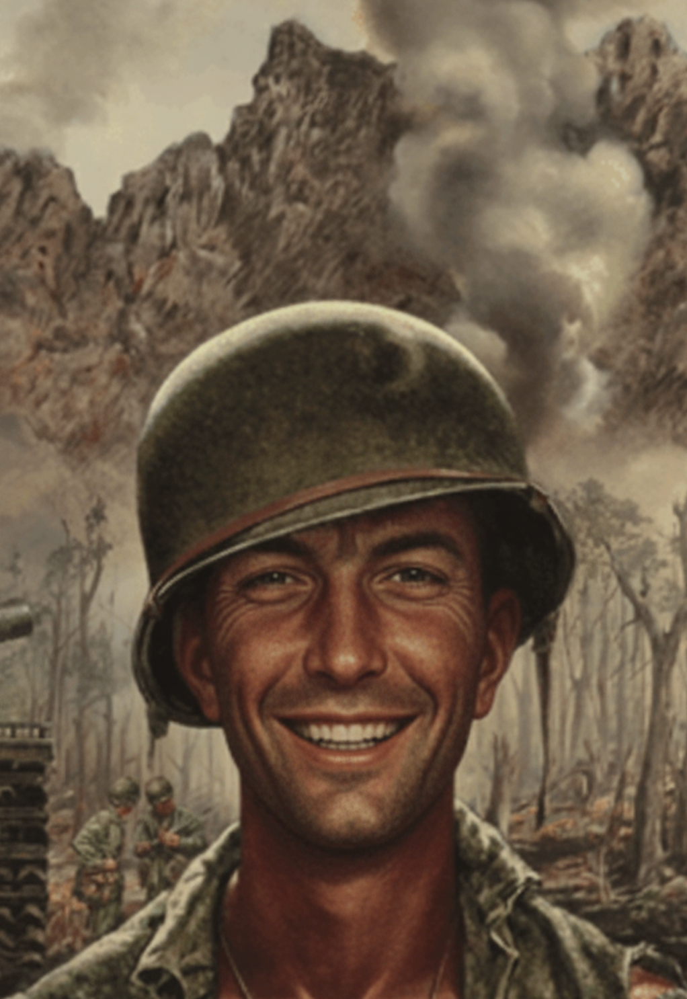

A criptografia sempre foi usada para proteger segredos, mas ganhou papel decisivo na Segunda Guerra Mundial. Os alemães utilizavam a máquina Enigma para transformar mensagens em códigos aparentemente aleatórios, como “ZROECM DJZQUMAM”. Só quem tinha a máquina e as configurações corretas podia entender o conteúdo real.
Quando matemáticos e criptógrafos aliados — incluindo Alan Turing — conseguiram quebrar o código da Enigma, passaram a antecipar ataques inimigos e proteger suas tropas. Esse avanço permitiu salvar milhares de vidas e, segundo muitos historiadores, ajudou a encurtar a guerra em até dois anos.
Assim, por trás de códigos estranhos e silenciosos, estava uma das armas mais importantes do conflito: a criptografia.
Na Frente Ocidental, a preparação para a invasão da Europa ocupada exigia um nível extremo de silêncio e precisão. Cada ordem precisava circular entre as unidades aliadas sem levantar suspeitas, pois qualquer vazamento poderia comprometer o destino de toda a operação. Assim, instruções sobre o Dia D eram transmitidas de forma discreta, misturadas a relatórios logísticos, mapas climáticos e comunicados rotineiros que passavam despercebidos aos olhos inimigos.
No meio dessa enxurrada de documentos, uma simples linha — “MIMDJZ MN MCMRHZLZU ZC RNUCMRAOM” — podia carregar a orientação que definiria o movimento de tropas e navios nos dias seguintes. Para quem sabia o que procurar, aquela combinação aparentemente inofensiva de letras trazia consigo o verdadeiro rumo da ofensiva aliada; para todos os outros, não passava de mais um detalhe irrelevante perdido no papel.
A Batalha do Atlântico foi uma luta constante para manter abertos os canais de abastecimento entre a América do Norte e a Europa. Submarinos alemães tentavam afundar comboios de navios mercantes, enquanto os Aliados aprimoravam radares, escoltas e códigos para proteger cada embarcação.
Relatórios sobre posição de comboios e chegada de reforços cruzavam o oceano disfarçados em textos aparentemente sem sentido. Uma mensagem como "UZPNULNF AZYZC KUNIZEZU NF LNCQNONF RN MIXMRIOLN RNUIZ" poderia decidir o destino de dezenas de navios, dependendo de ser ou não corretamente decifrada a tempo.
O amanhecer chegou frio e nebuloso, como tantos outros durante aqueles anos de guerra. No acampamento, soldados caminhavam entre as barracas com canecas de metal fumegantes, enquanto os caminhões eram preparados para mais uma patrulha. Entre papéis amassados, pedidos de suprimentos e listas de ração, o sargento Thompson carregava um caderno de anotações que ninguém dava muita importância.
Na página do dia, havia observações sobre o estado das estradas e o atraso das mulas de carga, mas uma linha chamava mais atenção do que as outras: "UZDJZUZCNF UZPNULN AZ ZFLNXIM RMF KUNSOCMF 12 HNUMF.". Para olhos desatentos, era só mais uma frase estranha em meio ao cotidiano. Para um agente treinado, podia ser o alerta de que algo grande estava prestes a acontecer.
Para quem passasse os olhos rapidamente, parecia apenas mais um registro burocrático perdido entre tantos. O sargento continuou escrevendo logo abaixo, como se estivesse apenas marcando o deslocamento de veículos: "KUNYMYZX MLMN AZ 'GNXP KMLT' RM UZEOMN.". Nada ali chamava atenção — apenas letras soltas, talvez abreviações de unidades, códigos de peças, locais ou horários. Mas para aqueles que realmente sabiam interpretar, aquelas anotações corriqueiras carregavam muito mais do que rotinas diárias: escondiam movimentos, direções e decisões que poderiam mudar o rumo de toda a operação.
Uma era de caos finalmente chega ao seu fi. Os tempos de guerra acabam e em meio a tantas perdas e outras infelicidades, um soldado deixa suas profundas mágoas para trás e decide registar uma foto 3x4 sua e no exato momento o fotográfo responsável pela foto ascena e diz para o soldado...
